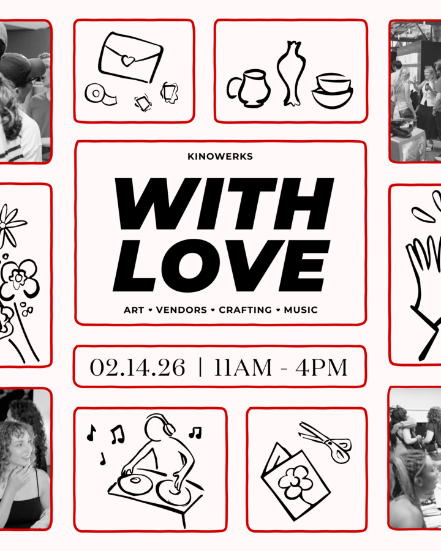

With Love – Arts & Vendors Fair
Kinowerks unites the creative community for an immersive celebration of art, craftsmanship, and connection. Bringing together a diverse group of artists, makers, and visionaries, this event spotlights the vibrancy of Chicago’s creative industry through an art showcase and interactive craft fair. Guests are invited to shop locally made creations, ranging from handmade jewelry and prints to high-end art pieces, and roll up their sleeves to embrace their inner artists at hands-on crafting tables. More than a market, this gathering is a celebration of love in all its forms: love for art, love for community, and love for creating. Note: Signing up for a crafting workshop includes your admission to the event. Interested in being a vendor? Fill out this form: https://forms.gle/NGxmAZoqopAQzeHS7
By attending With Love at Kinowerks, you acknowledge and agree that photography, video, and audio recording may take place throughout the event. These materials may be used by Kinowerks for promotional, archival, educational, and marketing purposes, including but not limited to social media, websites, newsletters, and future event materials.
If you have any questions or concerns regarding media capture, please speak with a Kinowerks team member at the event.